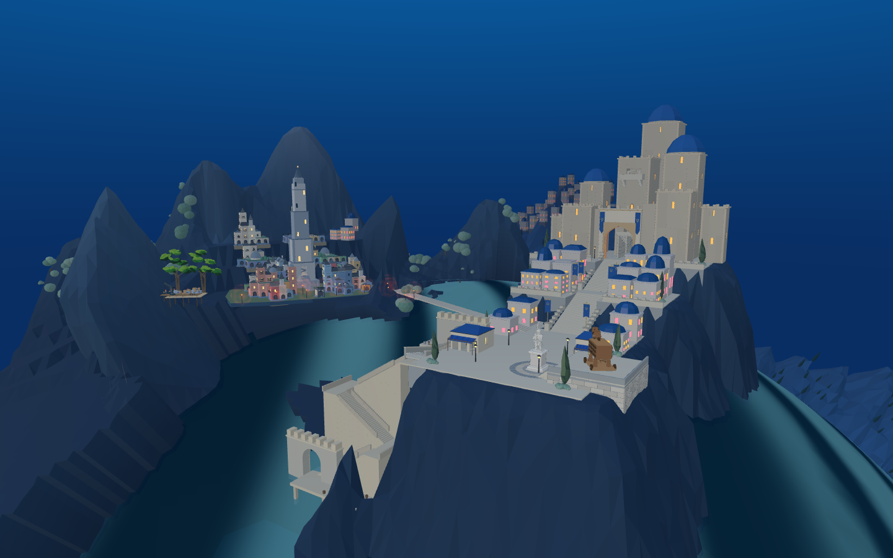
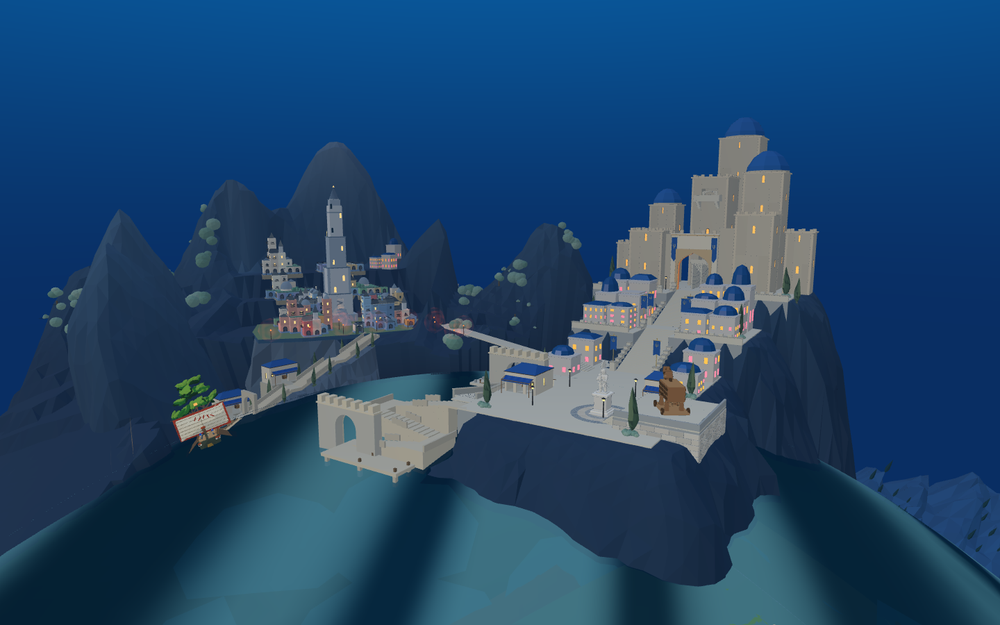
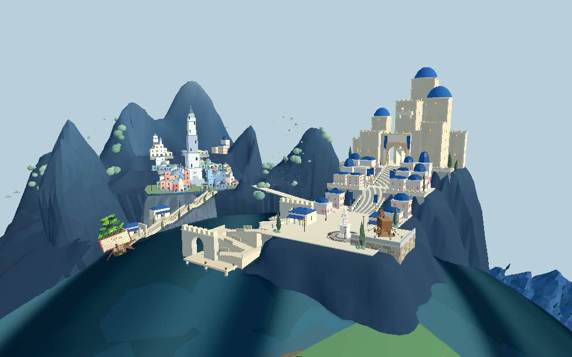
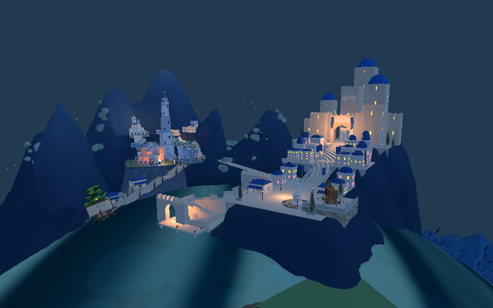

圣城当前改进已进入默认 8931 原游戏
直接进入原游戏 合入与验证记录
不用候选参数。共同地形基准、旧港、上城楼梯、Blender 岩体支撑、柏树、滨水建筑和分区灯光现在随原游戏加载。Web 保持原游戏运行方式；同一 Godot 工程的全局检视与圣城入口也已统一装配。
这是当前已完成改进的默认合入。完整攻城、自动港口物流以及目标图要求的全部视觉仍未完成。
同机位观察圣城

保留的旧版诊断布局。
不带布局参数的默认页面中，实际加载的圣城。Godot 默认装配

默认装配白天。
同场景夜间布光。本批验证
默认与原显式候选的新增几何、位置一致；原船和木马控制器引用保留。木马三种出兵时长后的返程均完成，8名士兵归队。Godot 无附加参数时，旧港90段、前港202段和建筑侧路40/30段实兵通行通过。全局检视与圣城入口均只装入一份新部件，镜像实验小岛保留。
截图采用统一观察机位；进入原游戏后仍按原剧情开始游玩。